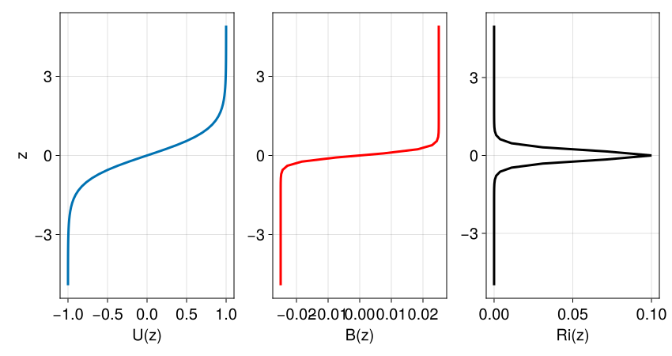

Stratified Kelvin-Helmholtz instability
Install dependencies
First let's make sure we have all required packages installed.
using Pkg
pkg"add Oceananigans, CairoMakie"The physical domain
We simulate a Kelvin-Helmholtz instability in two-dimensions in $x, z$ and therefore assign Flat to the y direction,
using Oceananigans
grid = RectilinearGrid(size=(64, 64), x=(-5, 5), z=(-5, 5),
topology=(Periodic, Flat, Bounded))64×1×64 RectilinearGrid{Float64, Periodic, Flat, Bounded} on CPU with 3×0×3 halo
├── Periodic x ∈ [-5.0, 5.0) regularly spaced with Δx=0.15625
├── Flat y
└── Bounded z ∈ [-5.0, 5.0] regularly spaced with Δz=0.15625The basic state
We're simulating the instability of a sheared and stably-stratified basic state $U(z)$ and $B(z)$. Two parameters define our basic state: the Richardson number,
\[Ri = \frac{∂_z B}{(∂_z U)^2} ,\]
and the width of the stratification layer, $h$.
shear_flow(x, z, t) = tanh(z)
stratification(x, z, t, p) = p.h * p.Ri * tanh(z / p.h)
U = BackgroundField(shear_flow)
B = BackgroundField(stratification, parameters=(Ri=0.1, h=1/4))BackgroundField{typeof(Main.var"##288".stratification), @NamedTuple{Ri::Float64, h::Float64}}
├── func: stratification (generic function with 1 method)
└── parameters: (Ri = 0.1, h = 0.25)Our basic state thus has a thin layer of stratification in the center of the channel, embedded within a thicker shear layer surrounded by unstratified fluid.
using CairoMakie
zF = znodes(grid, Face())
zC = znodes(grid, Center())
Ri, h = B.parameters
fig = Figure(size = (850, 450))
ax = Axis(fig[1, 1], xlabel = "U(z)", ylabel = "z")
lines!(ax, shear_flow.(0, zC, 0), zC; linewidth = 3)
ax = Axis(fig[1, 2], xlabel = "B(z)")
lines!(ax, [stratification(0, z, 0, (Ri=Ri, h=h)) for z in zC], zC; linewidth = 3, color = :red)
ax = Axis(fig[1, 3], xlabel = "Ri(z)")
lines!(ax, [Ri * sech(z / h)^2 / sech(z)^2 for z in zF], zF; linewidth = 3, color = :black) # Ri(z)= ∂_z B / (∂_z U)²; derivatives computed by hand
fig
In unstable flows it is often useful to determine the dominant spatial structure of the instability and the growth rate at which the instability grows. If the simulation idealizes a physical flow, this can be used to make predictions as to what should develop and how quickly. Since these instabilities are often attributed to a linear instability, we can determine information about the structure and the growth rate of the instability by analyzing the linear operator that governs small perturbations about a base state, or by solving for the linear dynamics.
Here, we discuss first briefly linear instabilities and how one can obtain growth rates and structures of most unstable modes via eigenanalysis. Then we present an alternative method for approximating the eigenanalysis results when one does not have access to the linear dynamics or the linear operator about the base state.
Linear Instabilities
The base state $U(z)$, $B(z)$ is a solution of the inviscid equations of motion. Whether the base state is stable or not is determined by whether small perturbations about this base state grow or decay. To formalize this, we study the linearized dynamics satisfied by perturbations about the base state:
\[\partial_t \Phi = L \Phi \, .\]
where $\Phi = (u, v, w, b)$ is a vector of the perturbation velocities $u, v, w$ and perturbation buoyancy $b$ and $L$ a linear operator that depends on the base state, $L = L(U(z), B(z))$ (the background_fields). Eigenanalysis of the linear operator $L$ determines the stability of the base state, such as the Kelvin-Helmholtz instability. That is, by using the ansantz
\[\Phi(x, y, z, t) = \phi(x, y, z) \, \exp(\lambda t) \, ,\]
then $\lambda$ and $\phi$ are respectively eigenvalues and eigenmodes of $L$, i.e., they obey
\[L \, \phi_j = \lambda_j \, \phi_j \quad j=1,2,\dots \, .\]
From hereafter we'll use the convention that the eigenvalues are ordered according to their real part, $\mathrm{Re}(\lambda_1) \ge \mathrm{Re}(\lambda_2) \ge \dotsb$.
Remarks:
As we touched upon briefly above, Oceananigans.jl, does not include the linearized version of the equations. Furthermore, Oceananigans.jl does not give us access to the linear operator $L$ so that we can perform eigenanalysis. Below we discuss an alternative way of approximating the eigenanalysis results. The method boils down to solving the nonlinear equations while continually renormalize the magnitude of the perturbations to ensure that nonlinear terms (terms that are quadratic or higher in perturbations) remain negligibly small, i.e.,much smaller than the background flow.
The power method algorithm
Successive application of $L$ to a random initial state will eventually render it parallel with eigenmode $\phi_1$:
\[\lim_{n \to \infty} L^n \Phi \propto \phi_1 \, .\]
Of course, if $\phi_1$ is an unstable mode (i.e., $\sigma_1 = \mathrm{Re}(\lambda_1) > 0$), then successive application of $L$ will lead to exponential amplification. (Similarly, if $\sigma_1 < 0$, successive application of $L$ will lead to exponential decay of $\Phi$ down to machine precision.) Therefore, after each application of the linear operator $L$, we rescale the output $L \Phi$ back to a pre-selected amplitude.
So, we initialize a simulation with random initial conditions with amplitude much less than those of the base state (which are $O(1)$). Instead of "applying" $L$ on our initial state, we evolve the (approximately) linear dynamics for interval $\Delta \tau$. We measure how much the energy has grown during that interval, rescale the perturbations back to original energy amplitude and repeat. After some iterations the state will converge to the most unstable eigenmode.
In summary, each iteration of the power method includes:
- compute the perturbation energy, $E_0$,
- evolve the system for a time-interval $\Delta \tau$,
- compute the perturbation energy, $E_1$,
- determine the exponential growth of the most unstable mode during the interval $\Delta \tau$ as $\log(E_1 / E_0) / (2 \Delta \tau)$,
- repeat the above until growth rate converges.
By fiddling a bit with $\Delta t$ we can get convergence after only a few iterations.
Let's apply all these to our example.
The model
model = NonhydrostaticModel(; grid,
advection = UpwindBiased(order=5),
background_fields = (u=U, b=B),
closure = ScalarDiffusivity(ν=2e-4, κ=2e-4),
buoyancy = BuoyancyTracer(),
tracers = :b)NonhydrostaticModel{CPU, RectilinearGrid}(time = 0 seconds, iteration = 0)
├── grid: 64×1×64 RectilinearGrid{Float64, Periodic, Flat, Bounded} on CPU with 3×0×3 halo
├── timestepper: RungeKutta3TimeStepper
├── advection scheme: UpwindBiased(order=5)
├── tracers: b
├── closure: ScalarDiffusivity{ExplicitTimeDiscretization}(ν=0.0002, κ=(b=0.0002,))
├── buoyancy: BuoyancyTracer with ĝ = NegativeZDirection()
└── coriolis: NothingWe have included a "pinch" of viscosity and diffusivity in anticipation of what will follow further down: viscosity and diffusivity will ensure numerical stability when we evolve the unstable mode to the point it becomes nonlinear.
Here, we take $\Delta \tau = 15$. We also set verbose=false so that run!(simulation) is a little quieter.
simulation = Simulation(model, Δt=0.1, stop_iteration=150, verbose=false)Simulation of NonhydrostaticModel{CPU, RectilinearGrid}(time = 0 seconds, iteration = 0)
├── Next time step: 100 ms
├── run_wall_time: 0 seconds
├── run_wall_time / iteration: NaN days
├── stop_time: Inf days
├── stop_iteration: 150.0
├── wall_time_limit: Inf
├── minimum_relative_step: 0.0
├── callbacks: OrderedDict with 4 entries:
│ ├── stop_time_exceeded => Callback of stop_time_exceeded on IterationInterval(1)
│ ├── stop_iteration_exceeded => Callback of stop_iteration_exceeded on IterationInterval(1)
│ ├── wall_time_limit_exceeded => Callback of wall_time_limit_exceeded on IterationInterval(1)
│ └── nan_checker => Callback of NaNChecker for u on IterationInterval(100)
└── output_writers: OrderedDict with no entriesNow some helper functions that will be used during for the power method algorithm.
First a function that evolves the state for $\Delta \tau$ and measure the energy growth over that period.
"""
grow_instability!(simulation, energy)
Grow an instability by running `simulation`.
Estimates the growth rate ``σ`` of the instability
using the fractional change in volume-mean kinetic energy,
over the course of the `simulation`
``
energy(t₀ + Δτ) / energy(t₀) ≈ exp(2 σ Δτ)
``
where ``t₀`` is the starting time of the simulation and ``t₀ + Δτ``
the ending time of the simulation. We thus find that the growth rate
is measured by
``
σ = log(energy(t₀ + Δτ) / energy(t₀)) / (2 Δτ) .
``
"""
function grow_instability!(simulation, energy)
# Initialize
simulation.model.clock.iteration = 0
t₀ = simulation.model.clock.time = 0
compute!(energy)
energy₀ = energy[1, 1, 1]
# Grow
run!(simulation)
# Analyze
compute!(energy)
energy₁ = energy[1, 1, 1]
Δτ = simulation.model.clock.time - t₀
# ½(u² + v²) ~ exp(2 σ Δτ)
σ = growth_rate = log(energy₁ / energy₀) / 2Δτ
return growth_rate
endFinally, we write a function that rescales the state. The rescaling is done via computing the kinetic energy and then rescaling all flow fields so that the kinetic energy assumes a targetted value.
(Measuring the perturbation growth via the kinetic energy works fine unless an unstable mode only has buoyancy structure. In that case, the total perturbation energy is more adequate.)
"""
rescale!(model, energy; target_kinetic_energy = 1e-3)
Rescales all model fields so that `energy = target_kinetic_energy`.
"""
function rescale!(model, energy; target_kinetic_energy = 1e-6)
compute!(energy)
rescale_factor = √(target_kinetic_energy / energy[1, 1, 1])
for f in merge(model.velocities, model.tracers)
f .*= rescale_factor
end
return nothing
end
using PrintfAnother helper function for the power method,
"""
convergence(σ)
Check if the growth rate has converged. If the array `σ` has at least 2 elements then returns the
relative difference between ``σ[end]`` and ``σ[end-1]``.
"""
convergence(σ) = length(σ) > 1 ? abs((σ[end] - σ[end-1]) / σ[end]) : 9.1e18 # pretty big (not Inf tho)and the main function that performs the power method iteration.
"""
estimate_growth_rate(simulation, energy, ω; convergence_criterion=1e-3)
Estimates the growth rate iteratively until the relative change
in the estimated growth rate ``σ`` falls below `convergence_criterion`.
Returns ``σ``.
"""
function estimate_growth_rate(simulation, energy, ω, b; convergence_criterion=1e-3)
σ = []
power_method_data = []
compute!(ω)
push!(power_method_data, (ω=deepcopy(ω), b=deepcopy(b), σ=deepcopy(σ)))
while convergence(σ) > convergence_criterion
compute!(energy)
@info @sprintf("About to start power method iteration %d; kinetic energy: %.2e", length(σ)+1, energy[1, 1, 1])
push!(σ, grow_instability!(simulation, energy))
compute!(energy)
@info @sprintf("Power method iteration %d, kinetic energy: %.2e, σⁿ: %.2e, relative Δσ: %.2e",
length(σ), energy[1, 1, 1], σ[end], convergence(σ))
compute!(ω)
rescale!(simulation.model, energy)
push!(power_method_data, (ω=deepcopy(ω), b=deepcopy(b), σ=deepcopy(σ)))
end
return σ, power_method_data
endEigenplotting
A good algorithm wouldn't be complete without a good visualization,
u, v, w = model.velocities
b = model.tracers.b
perturbation_vorticity = Field(∂z(u) - ∂x(w))64×1×65 Field{Face, Center, Face} on RectilinearGrid on CPU
├── grid: 64×1×64 RectilinearGrid{Float64, Periodic, Flat, Bounded} on CPU with 3×0×3 halo
├── boundary conditions: FieldBoundaryConditions
│ └── west: Periodic, east: Periodic, south: Nothing, north: Nothing, bottom: Nothing, top: Nothing, immersed: Nothing
├── operand: BinaryOperation at (Face, Center, Face)
├── status: time=0.0
└── data: 70×1×71 OffsetArray(::Array{Float64, 3}, -2:67, 1:1, -2:68) with eltype Float64 with indices -2:67×1:1×-2:68
└── max=0.0, min=0.0, mean=0.0Rev your engines...
We initialize the power iteration with random noise and rescale to have a target_kinetic_energy
using Random, Statistics
mean_perturbation_kinetic_energy = Field(Average(1/2 * (u^2 + w^2)))
noise(x, z) = randn()
set!(model, u=noise, w=noise, b=noise)
rescale!(simulation.model, mean_perturbation_kinetic_energy, target_kinetic_energy=1e-6)
growth_rates, power_method_data = estimate_growth_rate(simulation, mean_perturbation_kinetic_energy, perturbation_vorticity, b)
@info "Power iterations converged! Estimated growth rate: $(growth_rates[end])"[ Info: About to start power method iteration 1; kinetic energy: 1.50e-03
[ Info: Power method iteration 1, kinetic energy: 4.86e-06, σⁿ: -1.91e-01, relative Δσ: 9.10e+18
[ Info: About to start power method iteration 2; kinetic energy: 1.01e-06
[ Info: Power method iteration 2, kinetic energy: 4.65e-06, σⁿ: 5.09e-02, relative Δσ: 4.75e+00
[ Info: About to start power method iteration 3; kinetic energy: 1.02e-06
[ Info: Power method iteration 3, kinetic energy: 9.55e-06, σⁿ: 7.45e-02, relative Δσ: 3.17e-01
[ Info: About to start power method iteration 4; kinetic energy: 1.01e-06
[ Info: Power method iteration 4, kinetic energy: 1.57e-05, σⁿ: 9.15e-02, relative Δσ: 1.86e-01
[ Info: About to start power method iteration 5; kinetic energy: 1.02e-06
[ Info: Power method iteration 5, kinetic energy: 1.69e-05, σⁿ: 9.36e-02, relative Δσ: 2.22e-02
[ Info: About to start power method iteration 6; kinetic energy: 1.02e-06
[ Info: Power method iteration 6, kinetic energy: 1.72e-05, σⁿ: 9.40e-02, relative Δσ: 4.81e-03
[ Info: About to start power method iteration 7; kinetic energy: 1.02e-06
[ Info: Power method iteration 7, kinetic energy: 1.72e-05, σⁿ: 9.40e-02, relative Δσ: 1.41e-04
[ Info: Power iterations converged! Estimated growth rate: 0.09400202561464563
Powerful convergence
We animate the power method steps. A scatter plot illustrates how the growth rate converges as the power method iterates.
n = Observable(1)
fig = Figure(size=(800, 600))
kwargs = (xlabel="x", ylabel="z", limits = ((-5, 5), (-5, 5)), aspect=1)
ω_title(t) = t === nothing ? @sprintf("vorticity") : @sprintf("vorticity at t = %.2f", t)
b_title(t) = t === nothing ? @sprintf("buoyancy") : @sprintf("buoyancy at t = %.2f", t)
ax_ω = Axis(fig[2, 1]; title = ω_title(nothing), kwargs...)
ax_b = Axis(fig[2, 3]; title = b_title(nothing), kwargs...)
ωₙ = @lift power_method_data[$n].ω
bₙ = @lift power_method_data[$n].b
σₙ = @lift [(i-1, i==1 ? NaN : growth_rates[i-1]) for i in 1:$n]
ω_lims = @lift (-maximum(abs, power_method_data[$n].ω), maximum(abs, power_method_data[$n].ω))
b_lims = @lift (-maximum(abs, power_method_data[$n].b), maximum(abs, power_method_data[$n].b))
hm_ω = heatmap!(ax_ω, ωₙ; colorrange = ω_lims, colormap = :balance)
Colorbar(fig[2, 2], hm_ω)
hm_b = heatmap!(ax_b, bₙ; colorrange = b_lims, colormap = :balance)
Colorbar(fig[2, 4], hm_b)
eigentitle(σ, t) = length(σ) > 0 ? @sprintf("Iteration #%i; growth rate %.2e", length(σ), σ[end]) : @sprintf("Initial perturbation fields")
σ_title = @lift eigentitle(power_method_data[$n].σ, nothing)
ax_σ = Axis(fig[1, :];
xlabel = "Power iteration",
ylabel = "Growth rate",
title = σ_title,
xticks = 1:length(power_method_data)-1,
limits = ((0.5, length(power_method_data)-0.5), (-0.25, 0.25)))
scatter!(ax_σ, σₙ; color = :blue)
frames = 1:length(power_method_data)
record(fig, "powermethod.mp4", frames, framerate=1) do i
n[] = i
end
Now for the fun part
Now we simulate the nonlinear evolution of the eigenmode we've isolated for a few e-folding times $1/\sigma$,
# Reset the clock
model.clock.iteration = 0
model.clock.time = 0
estimated_growth_rate = growth_rates[end]
simulation.stop_time = 5 / estimated_growth_rate
simulation.stop_iteration = 9.1e18 # pretty big (not Inf tho)
# Rescale the eigenmode
initial_eigenmode_energy = 5e-5
rescale!(simulation.model, mean_perturbation_kinetic_energy, target_kinetic_energy=initial_eigenmode_energy)Let's save and plot the perturbation vorticity and buoyancy and also the total vorticity and buoyancy (perturbation + basic state). It'll be also neat to plot the kinetic energy time-series and confirm it grows with the estimated growth rate.
total_vorticity = Field(∂z(u) + ∂z(model.background_fields.velocities.u) - ∂x(w))
total_b = Field(b + model.background_fields.tracers.b)
simulation.output_writers[:vorticity] =
JLD2Writer(model, (ω=perturbation_vorticity, Ω=total_vorticity, b=b, B=total_b, KE=mean_perturbation_kinetic_energy),
schedule = TimeInterval(0.10 / estimated_growth_rate),
filename = "kelvin_helmholtz_instability.jld2",
overwrite_existing = true)JLD2Writer scheduled on TimeInterval(1.064 seconds):
├── filepath: kelvin_helmholtz_instability.jld2
├── 5 outputs: (ω, Ω, b, B, KE)
├── array_type: Array{Float32}
├── including: [:grid, :coriolis, :buoyancy, :closure]
├── file_splitting: NoFileSplitting
└── file size: 43.4 KiBAnd now we...
@info "*** Running a simulation of Kelvin-Helmholtz instability..."
run!(simulation)[ Info: *** Running a simulation of Kelvin-Helmholtz instability...
Pretty things
First we plot the nonlinear equilibration of the perturbation fields together with the evolution of the kinetic energy,
@info "Making a neat movie of stratified shear flow..."
filepath = simulation.output_writers[:vorticity].filepath
ω_timeseries = FieldTimeSeries(filepath, "ω")
b_timeseries = FieldTimeSeries(filepath, "b")
Ω_timeseries = FieldTimeSeries(filepath, "Ω")
B_timeseries = FieldTimeSeries(filepath, "B")
KE_timeseries = FieldTimeSeries(filepath, "KE")
times = ω_timeseries.times
t_final = times[end]
n = Observable(1)
ωₙ = @lift ω_timeseries[$n]
bₙ = @lift b_timeseries[$n]
fig = Figure(size=(800, 600))
kwargs = (xlabel="x", ylabel="z", limits = ((-5, 5), (-5, 5)), aspect=1)
title = @lift @sprintf("t = %.2f", times[$n])
ax_ω = Axis(fig[2, 1]; title = "perturbation vorticity", kwargs...)
ax_b = Axis(fig[2, 3]; title = "perturbation buoyancy", kwargs...)
ax_KE = Axis(fig[3, :];
yscale = log10,
limits = ((0, t_final), (initial_eigenmode_energy, 1e-1)),
xlabel = "time")
fig[1, :] = Label(fig, title, fontsize=24, tellwidth=false)
ω_lims = @lift (-maximum(abs, ω_timeseries[$n]), maximum(abs, ω_timeseries[$n]))
b_lims = @lift (-maximum(abs, b_timeseries[$n]), maximum(abs, b_timeseries[$n]))
hm_ω = heatmap!(ax_ω, ωₙ; colorrange = ω_lims, colormap = :balance)
Colorbar(fig[2, 2], hm_ω)
hm_b = heatmap!(ax_b, bₙ; colorrange = b_lims, colormap = :balance)
Colorbar(fig[2, 4], hm_b)
tₙ = @lift times[1:$n]
KEₙ = @lift KE_timeseries[1:$n]
lines!(ax_KE, [0, t_final], @. initial_eigenmode_energy * exp(2 * estimated_growth_rate * [0, t_final]);
label = "~ exp(2 σ t)",
linewidth = 2,
color = :black)
lines!(ax_KE, times, KE_timeseries[:];
label = "perturbation kinetic energy",
linewidth = 4, color = :blue, alpha = 0.4)
KE_point = @lift Point2f[(times[$n], KE_timeseries[$n][1, 1, 1])]
scatter!(ax_KE, KE_point;
marker = :circle, markersize = 16, color = :blue)
frames = 1:length(times)
record(fig, "kelvin_helmholtz_instability_perturbations.mp4", frames, framerate=8) do i
@info "Plotting frame $i of $(frames[end])..."
n[] = i
end[ Info: Making a neat movie of stratified shear flow...
[ Info: Plotting frame 1 of 50...
[ Info: Plotting frame 2 of 50...
[ Info: Plotting frame 3 of 50...
[ Info: Plotting frame 4 of 50...
[ Info: Plotting frame 5 of 50...
[ Info: Plotting frame 6 of 50...
[ Info: Plotting frame 7 of 50...
[ Info: Plotting frame 8 of 50...
[ Info: Plotting frame 9 of 50...
[ Info: Plotting frame 10 of 50...
[ Info: Plotting frame 11 of 50...
[ Info: Plotting frame 12 of 50...
[ Info: Plotting frame 13 of 50...
[ Info: Plotting frame 14 of 50...
[ Info: Plotting frame 15 of 50...
[ Info: Plotting frame 16 of 50...
[ Info: Plotting frame 17 of 50...
[ Info: Plotting frame 18 of 50...
[ Info: Plotting frame 19 of 50...
[ Info: Plotting frame 20 of 50...
[ Info: Plotting frame 21 of 50...
[ Info: Plotting frame 22 of 50...
[ Info: Plotting frame 23 of 50...
[ Info: Plotting frame 24 of 50...
[ Info: Plotting frame 25 of 50...
[ Info: Plotting frame 26 of 50...
[ Info: Plotting frame 27 of 50...
[ Info: Plotting frame 28 of 50...
[ Info: Plotting frame 29 of 50...
[ Info: Plotting frame 30 of 50...
[ Info: Plotting frame 31 of 50...
[ Info: Plotting frame 32 of 50...
[ Info: Plotting frame 33 of 50...
[ Info: Plotting frame 34 of 50...
[ Info: Plotting frame 35 of 50...
[ Info: Plotting frame 36 of 50...
[ Info: Plotting frame 37 of 50...
[ Info: Plotting frame 38 of 50...
[ Info: Plotting frame 39 of 50...
[ Info: Plotting frame 40 of 50...
[ Info: Plotting frame 41 of 50...
[ Info: Plotting frame 42 of 50...
[ Info: Plotting frame 43 of 50...
[ Info: Plotting frame 44 of 50...
[ Info: Plotting frame 45 of 50...
[ Info: Plotting frame 46 of 50...
[ Info: Plotting frame 47 of 50...
[ Info: Plotting frame 48 of 50...
[ Info: Plotting frame 49 of 50...
[ Info: Plotting frame 50 of 50...
And then the same for total vorticity & buoyancy of the fluid.
n = Observable(1)
Ωₙ = @lift Ω_timeseries[$n]
Bₙ = @lift B_timeseries[$n]
fig = Figure(size=(800, 600))
kwargs = (xlabel="x", ylabel="z", limits = ((-5, 5), (-5, 5)), aspect=1)
title = @lift @sprintf("t = %.2f", times[$n])
ax_Ω = Axis(fig[2, 1]; title = "total vorticity", kwargs...)
ax_B = Axis(fig[2, 3]; title = "total buoyancy", kwargs...)
ax_KE = Axis(fig[3, :];
yscale = log10,
limits = ((0, t_final), (initial_eigenmode_energy, 1e-1)),
xlabel = "time")
fig[1, :] = Label(fig, title, fontsize=24, tellwidth=false)
hm_Ω = heatmap!(ax_Ω, Ωₙ; colorrange = (-1, 1), colormap = :balance)
Colorbar(fig[2, 2], hm_Ω)
hm_B = heatmap!(ax_B, Bₙ; colorrange = (-0.05, 0.05), colormap = :balance)
Colorbar(fig[2, 4], hm_B)
tₙ = @lift times[1:$n]
KEₙ = @lift KE_timeseries[1, 1, 1, 1:$n]
lines!(ax_KE, [0, t_final], @. initial_eigenmode_energy * exp(2 * estimated_growth_rate * [0, t_final]);
label = "~ exp(2 σ t)",
linewidth = 2,
color = :black)
lines!(ax_KE, times, KE_timeseries[:];
label = "perturbation kinetic energy",
linewidth = 4, color = :blue, alpha = 0.4)
KE_point = @lift Point2f[(times[$n], KE_timeseries[$n][1, 1, 1])]
scatter!(ax_KE, KE_point;
marker = :circle, markersize = 16, color = :blue)
axislegend(ax_KE; position = :rb)
record(fig, "kelvin_helmholtz_instability_total.mp4", frames, framerate=8) do i
n[] = i
endThis page was generated using Literate.jl.